-
01
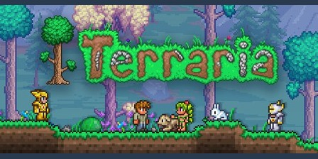
Terraria
플레이 시간 2,194.2시간
도전 과제 116/137
-
02
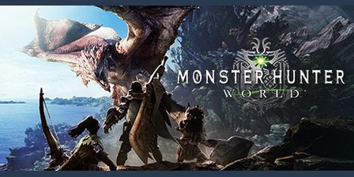
Monster Hunter: World
플레이 시간 1,492시간
도전 과제 77/100
-
03
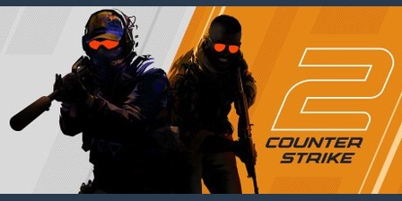
Counter-Strike 2
플레이 시간 1,469.6시간
도전 과제 1/1
-
04
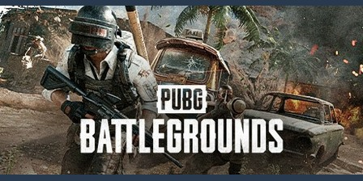
PUBG: BATTLEGROUNDS
플레이 시간 1,059.3시간
도전 과제 33/37
-
05
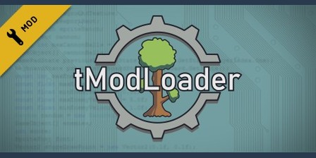
tModLoader
플레이 시간 1,043.6시간
도전 과제 표시 없음
-
06
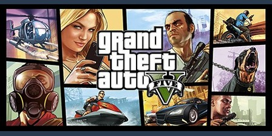
Grand Theft Auto V 레거시
플레이 시간 999.4시간
도전 과제 40/77
-
07
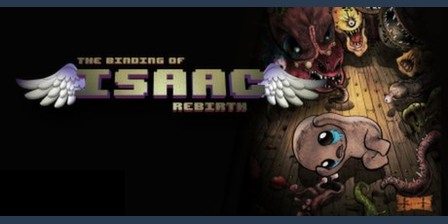
The Binding of Isaac: Rebirth
플레이 시간 884.1시간
도전 과제 641/641
-
08
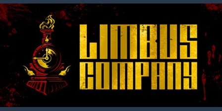
Limbus Company
플레이 시간 881.7시간
도전 과제 표시 없음
-
09
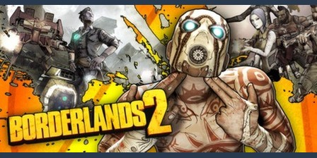
Borderlands 2
플레이 시간 860.5시간
도전 과제 75/75
-
10
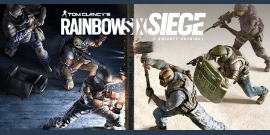
톰 클랜시의 레인보우식스 시즈
플레이 시간 829.8시간
도전 과제 표시 없음
-
11
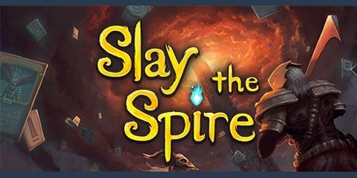
Slay the Spire
플레이 시간 754.9시간
도전 과제 46/46
-
12
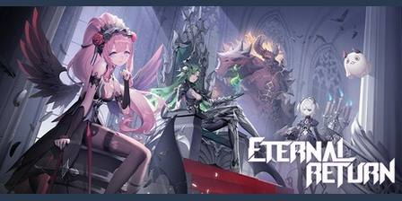
이터널 리턴
플레이 시간 627.5시간
도전 과제 표시 없음
-
13
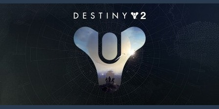
데스티니 가디언즈
플레이 시간 518.8시간
도전 과제 18/23
-
14
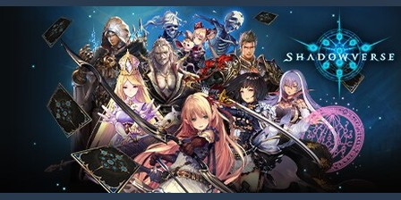
Shadowverse
플레이 시간 253.2시간
도전 과제 표시 없음
-
15
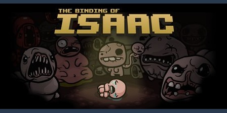
The Binding of Isaac
플레이 시간 231.3시간
도전 과제 85/99
-
16
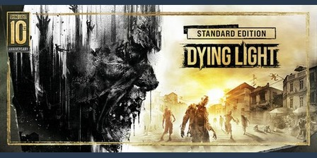
Dying Light
플레이 시간 172.8시간
도전 과제 53/78
-
17
Left 4 Dead 2
플레이 시간 168.8시간
도전 과제 46/101
-
18
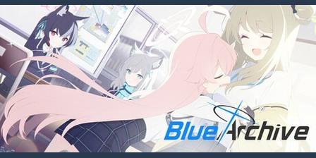
블루 아카이브
플레이 시간 163.2시간
도전 과제 표시 없음
-
19
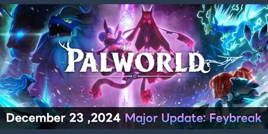
Palworld / 팰월드
플레이 시간 133.7시간
도전 과제 12/75
-
20
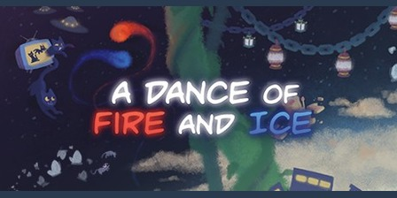
불과 얼음의 춤 (A Dance of Fire and Ice)
플레이 시간 119.3시간
도전 과제 47/47
-
21
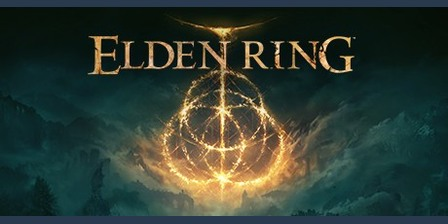
ELDEN RING
플레이 시간 118.5시간
도전 과제 33/42
-
22
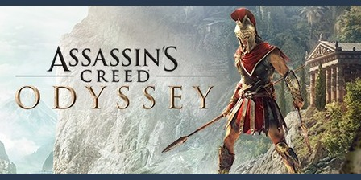
Assassin's Creed Odyssey
플레이 시간 112.9시간
도전 과제 45/93
-
23
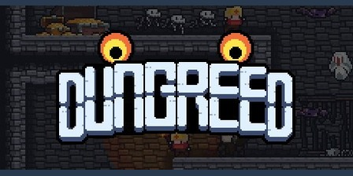
Dungreed
플레이 시간 106.6시간
도전 과제 22/24
-
24
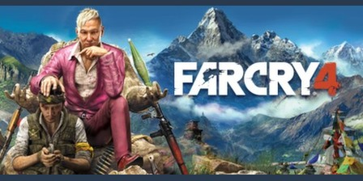
Far Cry 4
플레이 시간 79.2시간
도전 과제 표시 없음
-
25
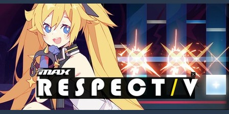
DJMAX RESPECT V
플레이 시간 78.5시간
도전 과제 61/288
-
26
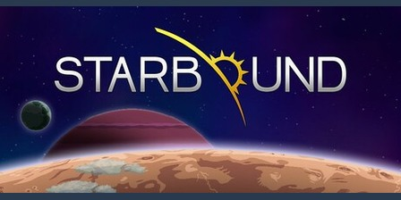
Starbound
플레이 시간 77.7시간
도전 과제 22/51
-
27
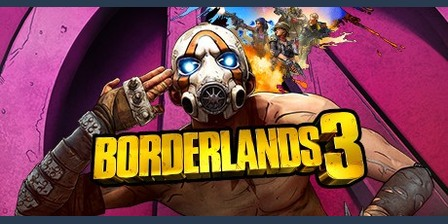
보더랜드 3
플레이 시간 76.4시간
도전 과제 39/81
-
28
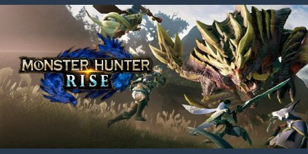
MONSTER HUNTER RISE
플레이 시간 76.4시간
도전 과제 22/100
-
29
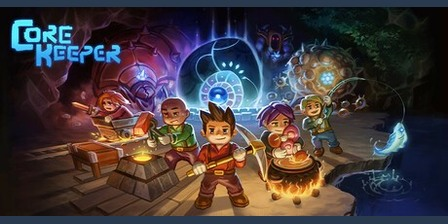
Core Keeper
플레이 시간 72.8시간
도전 과제 21/59
-
30
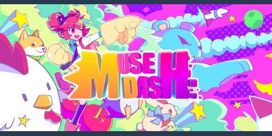
Muse Dash
플레이 시간 69.9시간
도전 과제 29/39
-
31
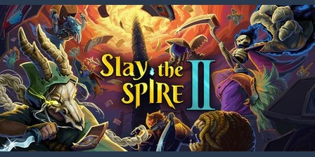
Slay the Spire 2
플레이 시간 68.7시간
도전 과제 표시 없음
-
32
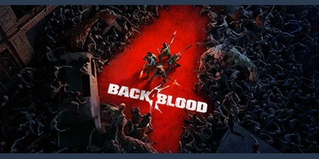
Back 4 Blood
플레이 시간 66.8시간
도전 과제 41/93
-
33
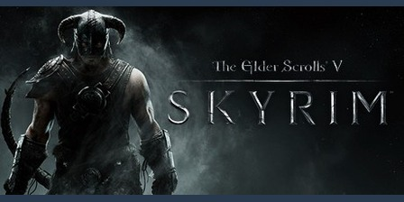
The Elder Scrolls V: Skyrim
플레이 시간 63.5시간
도전 과제 16/75
-
34
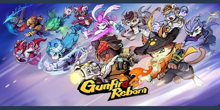
Gunfire Reborn
플레이 시간 62.3시간
도전 과제 65/134
-
35
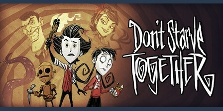
Don't Starve Together
플레이 시간 55.5시간
도전 과제 표시 없음
-
36
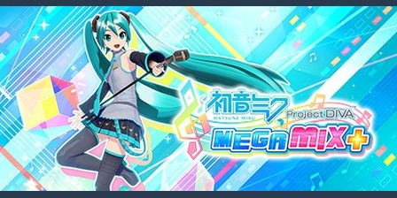
하츠네 미쿠 Project DIVA MEGA39’s+
플레이 시간 52.1시간
도전 과제 37/54
-
37
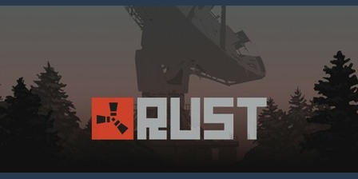
Rust
플레이 시간 49.3시간
도전 과제 7/116
-
38
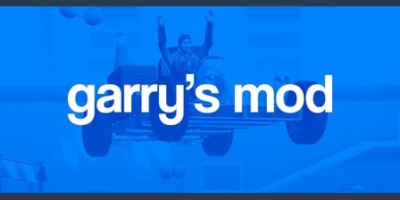
Garry's Mod
플레이 시간 45.8시간
도전 과제 6/29
-
39
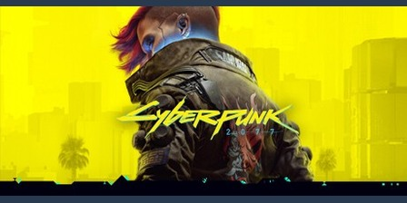
Cyberpunk 2077
플레이 시간 43.5시간
도전 과제 22/57
-
40
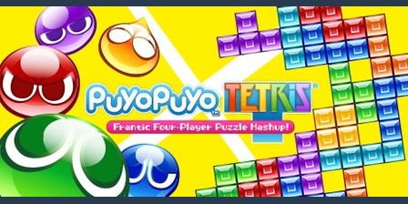
Puyo Puyo™Tetris®
플레이 시간 41.8시간
도전 과제 27/42
-
41
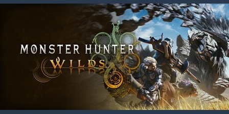
Monster Hunter Wilds
플레이 시간 35.8시간
도전 과제 21/50
-
42
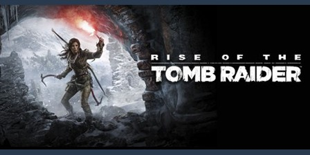
Rise of the Tomb Raider
플레이 시간 32.8시간
도전 과제 61/143
-
43
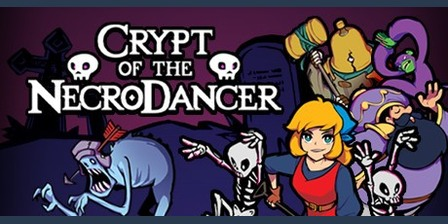
Crypt of the NecroDancer
플레이 시간 27.5시간
도전 과제 5/61
-
44
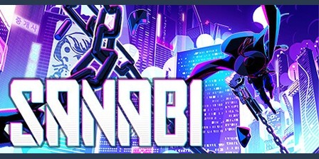
산나비
플레이 시간 26.7시간
도전 과제 21/21
-
45
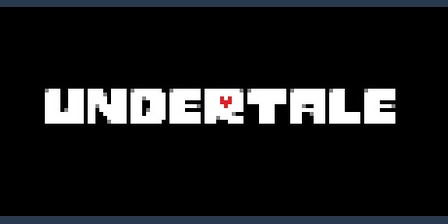
Undertale
플레이 시간 25.8시간
도전 과제 표시 없음
-
46
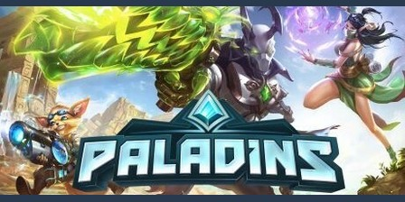
Paladins
플레이 시간 25.4시간
도전 과제 27/58
-
47
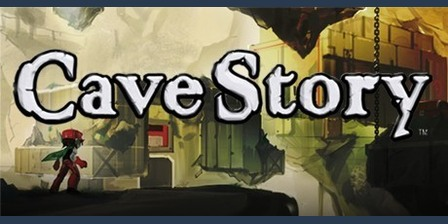
Cave Story+
플레이 시간 25.3시간
도전 과제 49/76
-
48
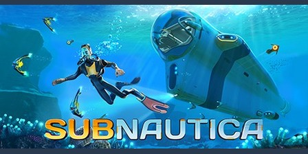
서브노티카
플레이 시간 21.1시간
도전 과제 4/17
-
49
Raft
플레이 시간 21.1시간
도전 과제 41/104
-
50
Far Cry Primal
플레이 시간 19.9시간
도전 과제 표시 없음
-
51
Geometry Dash
플레이 시간 19.8시간
도전 과제 54/547
-
52
Grand Theft Auto: San Andreas
플레이 시간 19.6시간
도전 과제 표시 없음
-
53
Far Cry 5
플레이 시간 19.6시간
도전 과제 표시 없음
-
54
7 Days to Die
플레이 시간 18.9시간
도전 과제 20/43
-
55
ONE PIECE PIRATE WARRIORS 3
플레이 시간 18.2시간
도전 과제 25/40
-
56
Dead by Daylight
플레이 시간 16.9시간
도전 과제 5/311
-
57
Castle Crashers
플레이 시간 16.3시간
도전 과제 6/12
-
58
Super Hexagon
플레이 시간 14.9시간
도전 과제 6/6
-
59
Delta Force
플레이 시간 14.9시간
도전 과제 4/53
-
60
세피리아
플레이 시간 14.8시간
도전 과제 12/27
-
61
Baba Is You
플레이 시간 14.6시간
도전 과제 2/18
-
62
Skullgirls 2nd Encore
플레이 시간 14.2시간
도전 과제 표시 없음
-
63
Hammerwatch
플레이 시간 13.2시간
도전 과제 5/38
-
64
Lethal Company
플레이 시간 12.7시간
도전 과제 표시 없음
-
65
태고의 달인 쿵딱! 원더풀 페스티벌
플레이 시간 12.1시간
도전 과제 24/33
-
66
Red Dead Redemption 2
플레이 시간 12시간
도전 과제 4/51
-
67
VVVVVV
플레이 시간 11.4시간
도전 과제 표시 없음
-
68
산 먹는 드워프
플레이 시간 10.9시간
도전 과제 7/21
-
69
PLATiNA :: LAB
플레이 시간 10.8시간
도전 과제 표시 없음
-
70
Sid Meier's Civilization V
플레이 시간 10.6시간
도전 과제 3/286
-
71
Wallpaper Engine
플레이 시간 10.6시간
도전 과제 5/17
-
72
Killing Floor 2
플레이 시간 10.3시간
도전 과제 14/307
-
73
Among Us
플레이 시간 10.2시간
도전 과제 9/33
-
74
Battlefield™ V
플레이 시간 9.1시간
도전 과제 5/21
-
75
Tomb Raider
플레이 시간 8.6시간
도전 과제 16/50
-
76
Old School Musical
플레이 시간 8.6시간
도전 과제 3/13
-
77
Company of Heroes 2
플레이 시간 8.1시간
도전 과제 표시 없음
-
78
Human Fall Flat
플레이 시간 8시간
도전 과제 29/155
-
79
Realm Royale Reforged
플레이 시간 7.9시간
도전 과제 표시 없음
-
80
Borderlands: The Pre-Sequel
플레이 시간 7.8시간
도전 과제 6/63
-
81
Super Meat Boy
플레이 시간 7.8시간
도전 과제 2/48
-
82
Strinova
플레이 시간 7.3시간
도전 과제 표시 없음
-
83
SUPERHOT
플레이 시간 6.3시간
도전 과제 13/26
-
84
Sniper Elite V2
플레이 시간 6.1시간
도전 과제 14/47
-
85
Dota 2
플레이 시간 5.7시간
도전 과제 표시 없음
-
86
Marvel’s Spider-Man Remastered
플레이 시간 5.7시간
도전 과제 6/78
-
87
Enter the Gungeon
플레이 시간 5.6시간
도전 과제 1/54
-
88
ARK: Survival Evolved
플레이 시간 5.5시간
도전 과제 1/32
-
89
Hero Siege
플레이 시간 5.4시간
도전 과제 9/135
-
90
Time Clickers
플레이 시간 5.4시간
도전 과제 38/99
-
91
PAYDAY 2
플레이 시간 5.4시간
도전 과제 14/1342
-
92
PAYDAY: The Heist
플레이 시간 5.2시간
도전 과제 표시 없음
-
93
Doki Doki Literature Club
플레이 시간 5.2시간
도전 과제 표시 없음
-
94
Apex 레전드™
플레이 시간 5.1시간
도전 과제 4/12
-
95
Totally Accurate Battlegrounds
플레이 시간 5.1시간
도전 과제 표시 없음
-
96
Soundodger+
플레이 시간 5.1시간
도전 과제 표시 없음
-
97
Hollow Knight
플레이 시간 5시간
도전 과제 6/63
-
98
Tabletop Simulator
플레이 시간 5시간
도전 과제 1/26
-
99
Minimum
플레이 시간 4.9시간
도전 과제 표시 없음
-
100
Battlefield™ 2042
플레이 시간 4.9시간
도전 과제 2/34
-
101
Timberman
플레이 시간 4.7시간
도전 과제 6/20
-
102
Warframe
플레이 시간 4.7시간
도전 과제 13/193
-
103
Spore
플레이 시간 4.4시간
도전 과제 표시 없음
-
104
LOCKDOWN Protocol
플레이 시간 4.3시간
도전 과제 표시 없음
-
105
Dungeon of the ENDLESS™
플레이 시간 4.2시간
도전 과제 5/33
-
106
Battlerite
플레이 시간 3.9시간
도전 과제 표시 없음
-
107
Don't Starve
플레이 시간 3.9시간
도전 과제 표시 없음
-
108
Shadow of the Tomb Raider
플레이 시간 3.6시간
도전 과제 6/99
-
109
Phasmophobia
플레이 시간 3.6시간
도전 과제 표시 없음
-
110
보더랜드® 4
플레이 시간 3.3시간
도전 과제 1/63
-
111
64.0
플레이 시간 3.3시간
도전 과제 4/14
-
112
PEAK
플레이 시간 3.1시간
도전 과제 9/64
-
113
식스타 게이트: 스타트레일
플레이 시간 3시간
도전 과제 10/95
-
114
크로노 아크
플레이 시간 3시간
도전 과제 표시 없음
-
115
Unturned
플레이 시간 2.9시간
도전 과제 표시 없음
-
116
METAL SLUG 3
플레이 시간 2.8시간
도전 과제 14/30
-
117
Zombie Army Trilogy
플레이 시간 2.8시간
도전 과제 16/68
-
118
Black Squad
플레이 시간 2.8시간
도전 과제 8/36
-
119
Tom Clancy's Ghost Recon Phantoms - NA
플레이 시간 2.7시간
도전 과제 표시 없음
-
120
DayZ
플레이 시간 2.7시간
도전 과제 표시 없음
-
121
Getting Over It with Bennett Foddy
플레이 시간 2.4시간
도전 과제 표시 없음
-
122
hololive Dreams
플레이 시간 2.3시간
도전 과제 표시 없음
-
123
TAPSONIC BOLD
플레이 시간 2.3시간
도전 과제 4/69
-
124
Supermarket Together
플레이 시간 2.3시간
도전 과제 5/55
-
125
Ring of Elysium
플레이 시간 표시 없음
도전 과제 표시 없음
-
126
A Story About My Uncle
플레이 시간 표시 없음
도전 과제 표시 없음
-
127
리듬 닥터 (Rhythm Doctor)
플레이 시간 표시 없음
도전 과제 표시 없음
-
128
Archeblade
플레이 시간 표시 없음
도전 과제 14/77
-
129
칼파: 코스믹 심포니(KALPA: Cosmic Symphony)
플레이 시간 표시 없음
도전 과제 표시 없음
-
130
Cry of Fear
플레이 시간 표시 없음
도전 과제 표시 없음
-
131
No More Room in Hell
플레이 시간 표시 없음
도전 과제 2/115
-
132
Monster Hunter Wilds Beta test
플레이 시간 표시 없음
도전 과제 표시 없음
-
133
Brotato
플레이 시간 표시 없음
도전 과제 13/94
-
134
In Falsus
플레이 시간 표시 없음
도전 과제 1/25
-
135
포 아너
플레이 시간 표시 없음
도전 과제 표시 없음
-
136
The Forest
플레이 시간 표시 없음
도전 과제 1/45
-
137
For The King
플레이 시간 표시 없음
도전 과제 4/78
-
138
데이브 더 다이버
플레이 시간 표시 없음
도전 과제 6/43
-
139
Angvik
플레이 시간 표시 없음
도전 과제 9/21
-
140
Trove
플레이 시간 표시 없음
도전 과제 표시 없음
-
141
Machine Party
플레이 시간 표시 없음
도전 과제 5/15
-
142
Silly Linguine Cat Simulator Deluxe Online
플레이 시간 표시 없음
도전 과제 51/244
-
143
Insurgency
플레이 시간 표시 없음
도전 과제 1/100
-
144
농부는 대체되었다
플레이 시간 표시 없음
도전 과제 7/59
-
145
Hand Simulator
플레이 시간 표시 없음
도전 과제 표시 없음
-
146
Relic Hunters Zero: Remix
플레이 시간 표시 없음
도전 과제 1/44
-
147
Counter-Strike:Global Offensive
플레이 시간 표시 없음
도전 과제 표시 없음
-
148
Hades
플레이 시간 표시 없음
도전 과제 표시 없음
-
149
METAL SLUG
플레이 시간 표시 없음
도전 과제 4/15
-
150
DARK SOULS™ III
플레이 시간 표시 없음
도전 과제 1/43
-
151
Stardew Valley
플레이 시간 표시 없음
도전 과제 표시 없음
-
152
Tom Clancy's Rainbow Six Siege - Test Server
플레이 시간 표시 없음
도전 과제 표시 없음
-
153
Five Nights at Freddy's
플레이 시간 표시 없음
도전 과제 표시 없음
-
154
Five Nights at Freddy's 2
플레이 시간 표시 없음
도전 과제 표시 없음
-
155
뿌요뿌요™테트리스® 2
플레이 시간 표시 없음
도전 과제 1/43
-
156
Symphony
플레이 시간 표시 없음
도전 과제 3/31
-
157
Revolution Idle
플레이 시간 표시 없음
도전 과제 3/675
-
158
Galcon 2
플레이 시간 표시 없음
도전 과제 1/10
-
159
Tales Runner
플레이 시간 표시 없음
도전 과제 1/15
-
160
Yume Nikki
플레이 시간 표시 없음
도전 과제 표시 없음
-
161
APB Reloaded
플레이 시간 표시 없음
도전 과제 표시 없음
-
162
Clicker Heroes
플레이 시간 표시 없음
도전 과제 표시 없음
-
163
Hi-Fi RUSH
플레이 시간 표시 없음
도전 과제 표시 없음
-
164
oO
플레이 시간 표시 없음
도전 과제 표시 없음
-
165
Downfall - A Slay the Spire Fan Expansion
플레이 시간 표시 없음
도전 과제 표시 없음
-
166
Skyrim Script Extender (SKSE)
플레이 시간 표시 없음
도전 과제 표시 없음
-
167

Starbound - Unstable
플레이 시간 표시 없음
도전 과제 표시 없음
-
168
911 Operator
플레이 시간 표시 없음
도전 과제 표시 없음
-
169
ARK: Survival Of The Fittest
플레이 시간 표시 없음
도전 과제 표시 없음
-
170
Brawlhalla
플레이 시간 표시 없음
도전 과제 표시 없음
-
171
Company of Heroes
플레이 시간 표시 없음
도전 과제 표시 없음
-
172
Company of Heroes - Legacy Edition
플레이 시간 표시 없음
도전 과제 표시 없음
-
173
Company of Heroes: Opposing Fronts
플레이 시간 표시 없음
도전 과제 표시 없음
-
174
Company of Heroes: Tales of Valor
플레이 시간 표시 없음
도전 과제 표시 없음
-
175
The Deed
플레이 시간 표시 없음
도전 과제 표시 없음
-
176

For Honor - Public Test
플레이 시간 표시 없음
도전 과제 표시 없음
-
177
Grand Theft Auto V 인핸스드
플레이 시간 표시 없음
도전 과제 표시 없음
-
178
LIMBO
플레이 시간 표시 없음
도전 과제 표시 없음
-
179
METAL SLUG X
플레이 시간 표시 없음
도전 과제 표시 없음
-
180
Oxygen Not Included
플레이 시간 표시 없음
도전 과제 표시 없음
-
181

Paladins - Public Test
플레이 시간 표시 없음
도전 과제 표시 없음
-
182
죠죠의 기묘한 모험 올 스타 배틀 R
플레이 시간 표시 없음
도전 과제 표시 없음
-
183

Realm Royale - Test Server
플레이 시간 표시 없음
도전 과제 표시 없음
-
184
Rust - Staging Branch
플레이 시간 표시 없음
도전 과제 표시 없음
-
185

Skullgirls ∞Endless Beta∞
플레이 시간 표시 없음
도전 과제 표시 없음
-
186
Snake Eyes Dungeon
플레이 시간 표시 없음
도전 과제 표시 없음
-
187
The Stanley Parable
플레이 시간 표시 없음
도전 과제 표시 없음
-
188
SUPERHOT: MIND CONTROL DELETE
플레이 시간 표시 없음
도전 과제 표시 없음
-
189
Warhammer 40,000: Gladius - Relics of War
플레이 시간 표시 없음
도전 과제 표시 없음
-
190
The Witcher 3: Wild Hunt — Remastered
플레이 시간 표시 없음
도전 과제 표시 없음